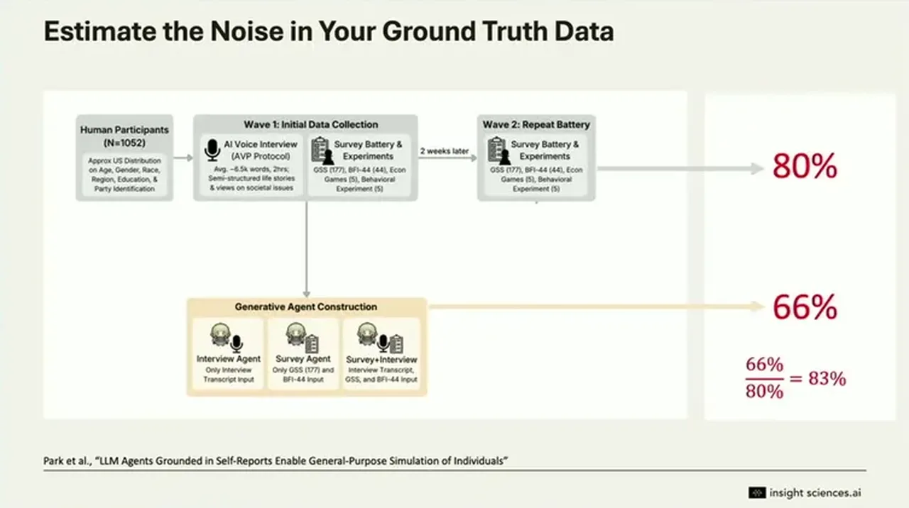

Persona Engineering: A Field Guide to AI Synthetic Personas
If you only read one thing
- Synthetic personas reached about 83% alignment with the humans they modeled, but that figure is normalized against the humans' own 80% self-consistency two weeks later, which sets the real accuracy ceiling.
- Three failure modes to check before trusting a synthetic panel: LLMs invent latent confounders when a persona isn't richly grounded (e.g., treating price as a proxy for quality), show strong order bias on reworded questions, and predict stated attitudes better than actual behaviors.
- Rerunning a synthetic persona many times without changing the input improves the precision of the estimate but does not increase statistical significance, so more synthetic samples can't substitute for real ground-truth validation.
Earlier attempts to simulate the electorate with raw statistics and 1950s-60s computing (Simulmatics) failed; LLMs unlock a new kind of simulation because they give an atomic unit, language itself, to model against feelings, choices, and behaviors that don't reduce to equations. In one well-known study, agents built from roughly a thousand humans' two-and-a-half-hour interview transcripts reached about 83% alignment on personality tests and surveys compared to the humans they were modeled on.
“What they found was as the agents were basically about 83% aligned and predictive to the corresponding humans they were modeled against”
▶ watch at 04:06“This company, Simulmatics, were extensively covered by Jill Lepore, promised that they could simulate and predict the electorate using raw statistics and the computational power at the time. Fortunately, that turned out not to be the case”
▶ watch at 03:05
First, when a persona isn't richly grounded, the LLM invents latent confounders to fill gaps, such as treating a rising price as a proxy for product quality rather than holding other properties fixed, producing a nonsensical inverted-U purchase curve instead of the expected downward-sloping demand curve. Second, LLM personas show a strong order bias when answer choices are reordered, washing results out toward 50/50 in a way that exceeds normal human first-order bias. Third, because LLMs are trained on what people say rather than what people do, they predict stated attitudes more accurately than actual behaviors in field experiments.
“the LLM was using the price as a proxy for other properties about the product that the humans were considering were fixed”
▶ watch at 06:09“the model had an extremely strong order bias. Basically, when they took the two results and they averaged them together, it washed out into noise, into 50/50”
▶ watch at 08:03“LLMs are trained on what people say, and they're not trained on what people do. So, as a consequence, predicting stated attitudes tend to be easier than predicting actions or behaviors”
▶ watch at 08:45
Basic role-prompting works but has to be validated empirically against ground truth, since more detailed persona construction can amplify rather than reduce bias. Fine-tuning on known human survey distributions improved alignment not just for the demographic groups used in training but also, by a similar degree, for unseen groups, suggesting the model has a latent understanding it just didn't know how to express in survey format. A more sophisticated technique has the model produce free text instead of a 1-5 rating, then maps that text to a probability distribution via semantic similarity to human-written examples, which better preserves the shape of the response distribution rather than just its average.
“the ones in white also improved by almost the same degree. Alignment improved even for the unseen groups”
▶ watch at 12:21
Rerunning a synthetic persona repeatedly without changing the input improves the precision of the model's estimate but does not increase statistical significance, the same way stacking more weather gauges doesn't make a forecast more accurate. The speaker recommends pairing a correlation metric with a distribution-shape metric, and estimating the ground truth's own noise floor (in one study, humans were only 80% self-consistent when retested two weeks later) since that sets a ceiling on how accurate any model could ever appear.
“if I take a forecast and I rerun it a thousand times without changing the input, that doesn't change my certainty of that forecast. It improves my estimate of what the model is telling me but it doesn't make the forecast itself more accurate”
▶ watch at 15:59“they found that the humans on average were only 80% consistent to themselves. So that sets a noise floor as how accurate our models could ever get”
▶ watch at 17:31Commentary (ours)
The self-consistency noise floor is the most important number in the talk because it reframes the headline 83% alignment figure: a model that already ties the humans' own repeat-test consistency may be close to the practical ceiling, not still catching up.


Underlying detail — every claim, typed and timestamped (8)
| Stance | Claim | t |
|---|---|---|
| asserts | AI agents built from interview transcripts of about a thousand humans were roughly 83% aligned with those humans' own personality test and survey results. | 04:06 |
| warns | An earlier attempt to simulate the electorate with raw statistics (Simulmatics) failed, so claims of predicting people should be approached with humility. | 03:05 |
| warns | When a persona isn't richly grounded, the LLM infers latent confounders from a variable like price, producing a nonsensical inverted-U purchase-probability curve instead of a normal downward-sloping demand curve. | 06:09 |
| warns | Reordering the same answer choices produced an extremely strong order bias in LLM personas, washing results out to roughly 50/50 when averaged. | 08:03 |
| warns | LLMs, trained on what people say rather than what they do, predict stated attitudes more accurately than actual behaviors in field experiments. | 08:45 |
| asserts | Fine-tuning on known human survey distributions improved alignment for unseen demographic groups by almost the same degree as for the groups used in training. | 12:21 |
| warns | Rerunning a synthetic persona many times without changing the input improves the precision of the estimate but does not increase statistical significance. | 15:59 |
| asserts | When the same humans were retested two weeks later, they were only about 80% consistent with themselves, setting a noise floor on achievable model accuracy. | 17:31 |
Machine-readable copy embedded in this page (script#ontology) and in the corpus ontology.